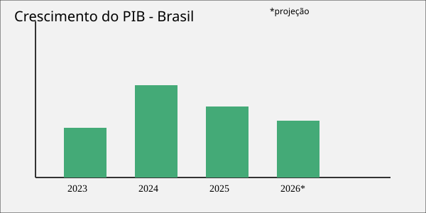

Resumo do cenário atual
A economia brasileira segue em desaceleração moderada em 2026, com o
otimismo do início do ano dando lugar a uma leitura mais cautelosa por
parte dos analistas. O crescimento do PIB
é estimado entre 1,8% e 1,9% para o ano, após o fechamento de 2025 em alta de 2,3%.

O que é o Boletim Focus?
É um relatório semanal divulgado pelo Banco Central com a média das projeções de bancos, corretoras e consultorias para indicadores como PIB, inflação, Selic e câmbio.
Por que a Selic afeta a economia?
A Selic é a taxa básica de juros. Quando está alta, o crédito fica mais caro e o consumo tende a desacelerar; quando está baixa, incentiva investimento e consumo, mas pode pressionar a inflação.